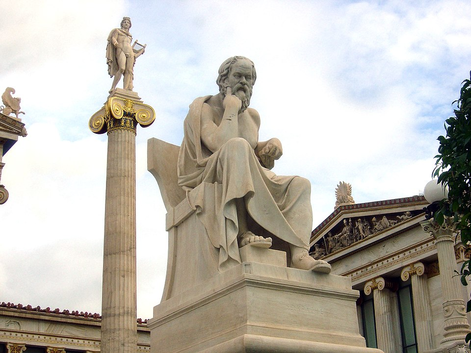

Cultura
Cultura Greciei a evoluat în câteva mii de ani, începând cu Grecia miceniană și continuând cel mai notabil cu Grecia Clasică, de-a lungul influenței Imperiului Roman cu continuarea sa în Răsărit de către Imperiul Bizantin. Alte culturi și popoare, cum ar fi statele latin și franc, Imperiul Otoman, Republica Venețiană, Republica Genoveză și chiar Imperiul Britanic și-au lăsat amprenta asupra culturii grecești moderne, deși istoricii creditează Războiul Grec de Independență ca principal moment de revitalizare a Greciei și dată de naștere a unei entități culturale moderne.
Teatrul
.jpg "Amfiteatrul Epidaurus") Arta teatrală s-a născut în Grecia. Orașul-stat antic Atena, care a devenit o importantă putere culturală,
politică și militară în această perioadă, a fost centrul principal unde s-a practicat această artă, unde a
fost instituționalizată ca parte a unui festival denumit Dionysia, în cinstea zeulul grec Dionis. Tragedia
(sfârșitul secolului al VI-lea î.e.n.), comedia (486 î.e.n.) și satira au fost cele trei specii ale genului
dramatic apărute aici.
Arta teatrală s-a născut în Grecia. Orașul-stat antic Atena, care a devenit o importantă putere culturală,
politică și militară în această perioadă, a fost centrul principal unde s-a practicat această artă, unde a
fost instituționalizată ca parte a unui festival denumit Dionysia, în cinstea zeulul grec Dionis. Tragedia
(sfârșitul secolului al VI-lea î.e.n.), comedia (486 î.e.n.) și satira au fost cele trei specii ale genului
dramatic apărute aici.
Filosofia
Tradițiile filosofice occidentale au început în Grecia Antică în secolul al VI-lea î.e.n. Primii filosofi
sunt denumiți „presocratici”, ceea ce arată că au fost înainte de Socrate, ale cărui contribuții marchează
un punct de cotitură în gândirea occidentală. Presocraticii proveneau din coloniile estice și vestice grecești,
și s-au păstrat doar fragmente din operele lor originale, în unele cazuri doar câte o singură propoziție.
Odată cu Socrate a început o nouă perioadă filosofică. Ca și sofiștii, el respingea întru totul speculațiile fizice pe care le lansau predecesorii săi, și a pornit de la gândurile și părerile oamenilor. Aspecte din filosofia lui Socrate au fost unificate de Platon, care le-a combinat cu numeroase principii stabilite de filosofi mai vechi, dezvoltând acest sistem complet.
Aristotel din Stagira, cel mai important discipol al lui Platon, împarte cu dascălul său titlul de cel mai mare filosof al antichității. Dar în timp ce Platon încercase să elucideze și să explice lucruri din punctul de vedere suprasenzorial al formei, elevul său a preferat să înceapă de la faptele provenite din experiență. Cu excepția acestor trei mari filosofi greci, alte mari școli filosofice grecești cu alți fondatori au fost în antichitate stoicismul, epicurianismul, scepticismul și neoplatonismul.
Literatura
La începutul literaturii grecești stau cele două opere monumentale ale lui Homer: Iliada și Odiseea. Deși există diferite datări istorice, ele apăruseră deja pe la 800 î.e.n. sau puțin după. În perioada clasică au apărut multe dintre speciile literare occidentale: poezia lirică, oda, pastorala, elegia, epigrama; teatrul de comedie și tragedie; istoriografia, retorica, dialectica filosofică, și tratatul filosofic au apărut toate în această perioadă. Cei mai mari poeți lirici au fost Sappho și Pindar.
Nikos Kazantzakis este un autor grec care a scris de-a lungul vieții sale poeme, romane, eseuri, și cărți de călătorii. Probabil cel mai important și cel mai tradus scriitor grec al secolului XX. A devenit cunoscut în 1964 când a fost lansat filmul Zorba Grecul, bazat pe romanul cu același nume scris de acesta.
Bucătăria
Bucătăria grecească este una cu specific mediteranean, și în cadrul ei, o tradiție culinară foarte reprezentativă este cea cretană. Bucătăria grecească folosește ingrediente proaspete pe care le integrează în diferite feluri de mâncare tradiționale locale, cum ar fi musacaua, stifado, salata grecească, fasolada (un fel de iahnie fără carne), spanakopita (plăcinte cu spanac) și frigărui (denumite souvlaki). Unele feluri de mâncare pot fi identificate ca având originile în Grecia Antică, așa cum este cazul cu skordalia (un piureu gros de nuci, migdale, usturoi pisat și ulei de măsline), supa de linte, Retsina (vin alb sau rosé cu aromă de rășină de brad) și pasteli (batoane cu susan copt cu miere). În toată Grecia, oamenii mănâncă din vase mici, denumite meze cu diverse sosuri, cum ar fi tzatziki, caracatiță la grătar și pești mici, brânză feta, dolmades (sarmale în foi de viță cu umplutură din orez, coacăze și muguri de brad), diverse legume uscate, măsline și brânză. Uleiul de măsline se adaugă la aproape orice fel de mâncare.
Mitologia
 Numeroșii zei ai religiei Greciei antice, precum și eroii legendari ai epopeelor antice (Odiseea și Iliada),
și evenimentele cărora le sunt protagoniști toți aceștia constituie ceea ce astăzi este denumit popular „mitologia greacă”.
În afara rolului religios, mitologia vechilor greci juca și un rol cosmologic, încercând să explice formarea și
funcționarea lumii.
Numeroșii zei ai religiei Greciei antice, precum și eroii legendari ai epopeelor antice (Odiseea și Iliada),
și evenimentele cărora le sunt protagoniști toți aceștia constituie ceea ce astăzi este denumit popular „mitologia greacă”.
În afara rolului religios, mitologia vechilor greci juca și un rol cosmologic, încercând să explice formarea și
funcționarea lumii.
Principalii zei ai grecilor antici erau Dodekatheon (cei doisprezece zei), care trăiau, conform legendei, pe Muntele Olimp. Cel mai important dintre aceștia era Zeus, regele zeilor, căsătorit cu Hera, care îi era și soră. Ceilalți zei greci erau Demetra, Hades, Ares, Poseidon, Atena, Dionis, Apollo, Artemis, Afrodita, Hefaistos și Hermes. În afara acestora, grecii mai aveau și alte credințe mistice, cum ar fi cele în nimfe, și în alte ființe magice.